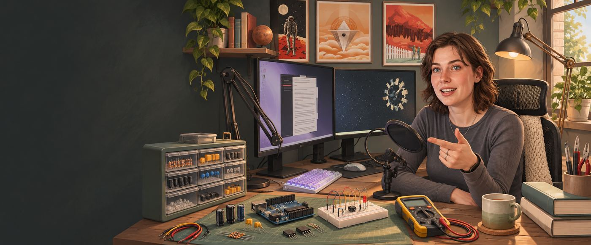

THE WORKBENCHArduino Uno R3 · 学习与实践
我的工作台
BUILT BY LEARNING
小实验，真实的收获。
从一盏 LED 到模拟信号，
把知识变成可以运行的代码。
THE REFERENCE SHELF
值得留在手边的资料。
文档、学习笔记与收藏链接。
少一点杂乱，多一点真正用得上的内容。
正在打开资料目录……
NOTES FROM THE BENCH
实验之后，留下一页。
正在读取日志……

我的工作台
BUILT BY LEARNING
从一盏 LED 到模拟信号，
把知识变成可以运行的代码。
THE REFERENCE SHELF
文档、学习笔记与收藏链接。
少一点杂乱，多一点真正用得上的内容。
NOTES FROM THE BENCH